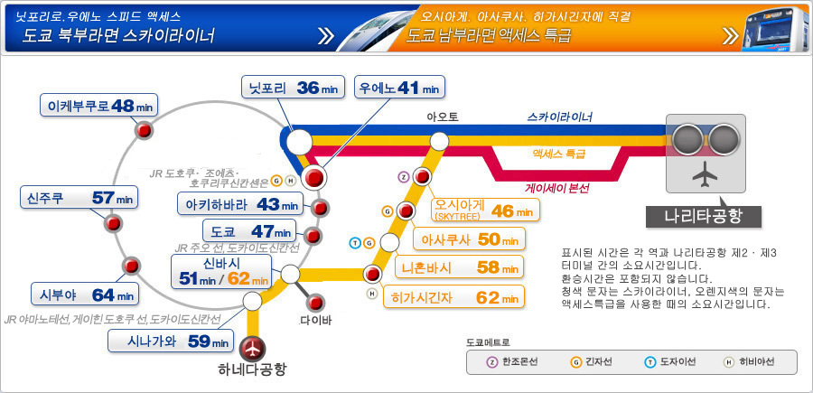
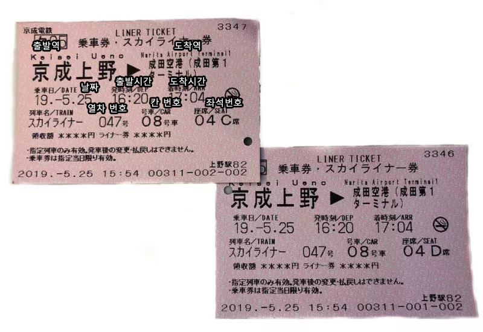
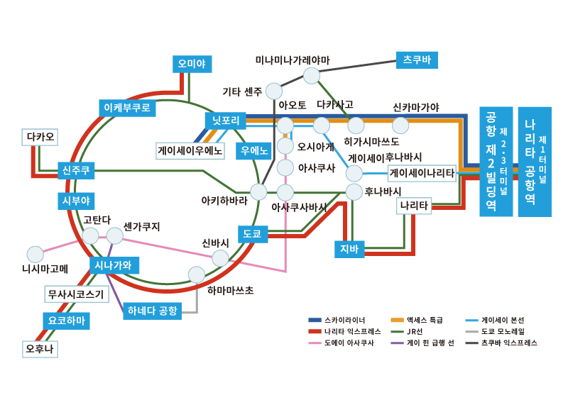
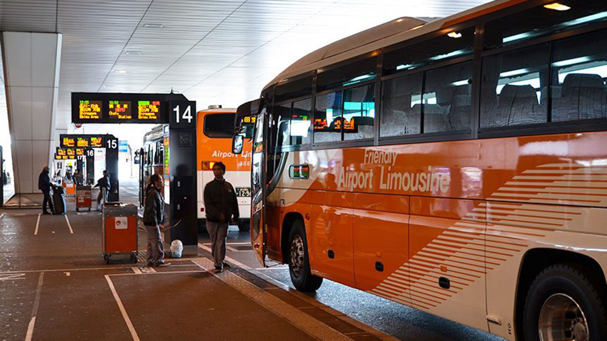

당신은 부풀어있는 마음으로 나리타 공항에 도착했습니다.
하지만 그 다음은요?
우리는 도쿄를 여행하려고 하면 간과하고 넘어가는 것이 있습니다. 나리타 공항에서부터 도쿄로 가는 그 과정이 생각보다 거리가 멀다는 것이죠. 그래서 먼저 도쿄로 가는 방법들을 짚고 넘어가야 할 필요가 있습니다. 도쿄로 가는 방법은 너무나도 많습니다. 택시, 버스, 전철, 나리타 익스프레스 등 과 같은 것들이죠. 우선 어떤 수단이 있는지 살펴봅시다.
도쿄 스카이라이너

| 소요시간 | 약 40분 (우에노 역 도착 기준) |
|---|---|
| 가격 | 편도 2470엔 |
| 배차간격 | 20분 |
| 운행시간 |
나리타 공항 - 도쿄 : 07:28 ~ 22:30
도쿄 - 나리타공항 : 05:58 ~ 18:20 |
| 주요 정차역 | 닛포리, 우에노 |
| 특이사항 | 도쿄 시내까지 가는 가장 빠른 교통수단입니다. 우에노역 까지만 운행하며 도쿄역과 신주쿠역까지는 환승해야 합니다. |

나리타 익스프레스 NEX

| 소요시간 |
도쿄역 : 60분 ~ 70분 신주쿠역 : 80분 ~ 90분 |
|---|---|
| 가격 | 편도 3190엔 / 왕복 4000엔 |
| 배차간격 | 30분 |
| 운행시간 |
나리타 공항 - 도쿄 : 07:44 ~ 21:44
도쿄 - 나리타공항 : 05:55 ~ 19:33 역 별 시간은 NEX 공식 시간표 참조 |
| 주요 정차역 | 도쿄역, 시부야역, 신주쿠역, 이케부쿠로역 |
| 특이사항 | 현지에서만 구매 가능하며 구매시 여권을 제시해야합니다. 왕복을 구매하면 14일 이내에 사용해야합니다. |

나리타공항 리무진버스

| 소요시간 |
도쿄역 : 1시간 30분 신주쿠역 : 약 2시간 |
|---|---|
| 가격 | 편도 2500엔 ~ 3600엔 / 목적지에 따라 가격이 다름 |
| 배차간격 | 15분 ~ 30분 / 2시간에 1대 등 목적지에 따라 간격이 다름 |
| 운행시간 | 07:00 ~ 23:00 |
| 특이사항 | 도쿄 시내 주요 역, 호텔까지 이동 가능하며 티켓을 구매할때 안내 받아야합니다. |